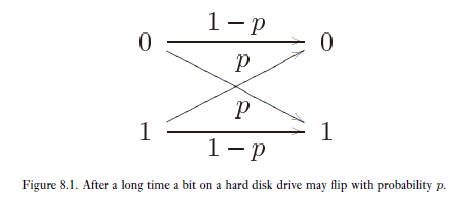
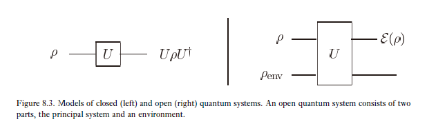
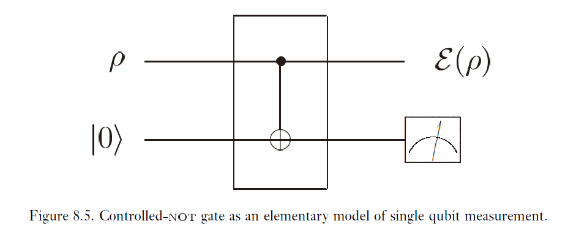
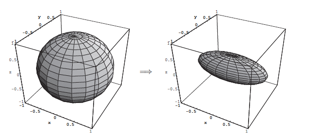
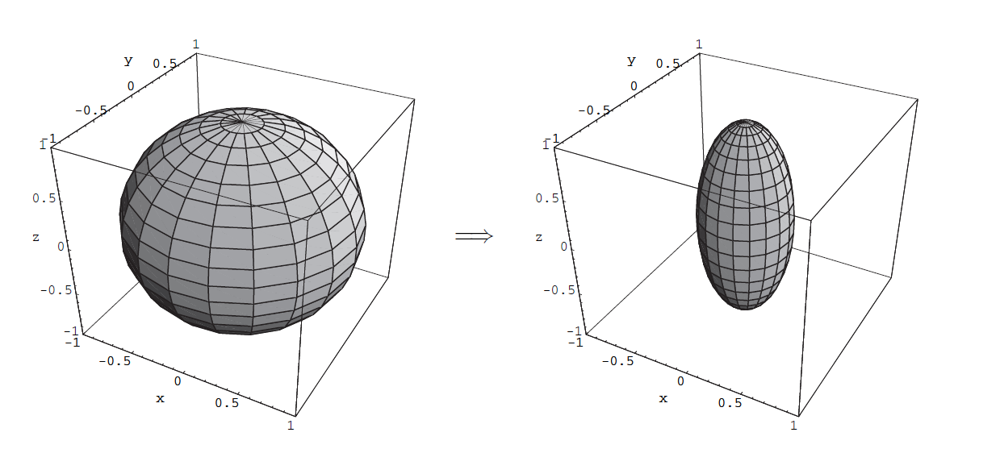
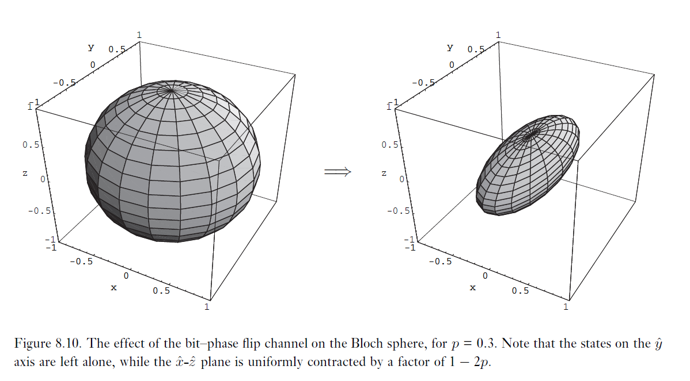
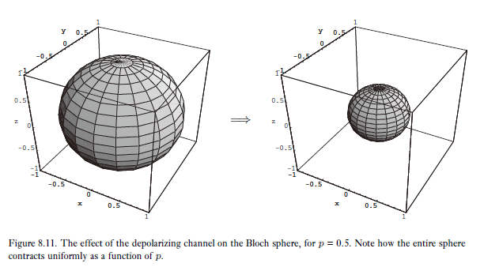

沙漠之所以美丽，是因为不知在哪里藏着一口水井
量子噪声和量子运算
- 量子系统是无法做到完全封闭的，就如再精确的机械钟内部也会与空气的摩擦。如果将一个量子比特的状态用一个电子的两个位置来表示的话，那么这个电子将会与其他带电粒子产生交互作用，这种作用成为影响这个量子比特的不能控制的噪声源。
:::info
一个开放系统就是与其他环境系统具有交互作用的系统，而这个环境系统的动力学过程我们希望予以忽略或均化。
:::
- 量子运算的数学形式化对于我们描述开放量子系统的动力学过程是一个关键的工具。这种工具不仅可用来描述与其环境弱耦合的近似封闭系统，也可以用于描述与其环境强耦合的系统，以及那些突然被打开并接受测量的封闭系统。
经典噪声和Markov过程
:::primary
想象这样一个过程，一个经典比特正被储存到内置于普通经典计算机中的一个硬盘驱动器里，这个比特刚开始为0或1。但在很长一段时间后扰动磁场会对这个比特造成干扰，并可能引起其状态反转。通过引入使这个比特翻转的概率p和使这个比特保持原状态的概率为1-p，我们就可以对这类问题建模。
:::

当然，真正发生什么取决于环境包含能造成比特反转的磁场。为了计算模型中的p，我们需要了解：
- 建立环境中磁场分布的接近真实情况的模型。这可以通过对驱动器运行环境中对磁场采样解决。
- 建立环境中磁场如何与硬盘中比特产生交互的模型。这就是Maxwell方程。
利用上面两点我们就可以从原理上来计算在某个规定时间段内驱动器上一个比特会翻转的概率。
这个基本过程（++找出环境的模型以及系统-环境间交互作用的模型++）是我们在研究经典噪声和量子噪声中将会反复遵循的过程。与环境的交互作用是基本噪声来源，往往不容易找到针对环境或系统-环境交互作用的精确模型。
でも，通过在建模中引入保守性和限于研究所观测到的系统性质以判断其是否服从这个模型，那么还是有可能使显示物理提系统中噪声建模达到高的准确度。
经典比特的行为非常好刻画。设$p_0,p_1$分别是初始时其处于状态0和1的概率，$q_0,q_1$ 是噪声出现后处于状态0和1的概率。令X为其初始状态，Y为其最终状态，那么有：
然后可以考虑若干非门组成的线路，但每个非门都有一定的概率（1-p）不起作用，门之间概率独立。这就有经典的Markov过程：
其中，E是概率转移矩阵，在上述情况中它就是$\begin{pmatrix}1-p&p\\p&1-p\end{pmatrix}$。
Markov过程中，要去输入$\overrightarrow{p}$和输出$\overrightarrow{q}$都是一个合法的概率分布。那么关于演化矩阵E就有两个限制条件：
- 非负性（positivity）：E的所有元必须是非负的。
- 完备性（completeness）：E的所有列必须取和为1。
- ++Markov过程告诉我们输入概率和输出概率之间具有线性关系，可用转移矩阵描述。在规定噪声是由独立的环境所引起的前提下，包含多级的经典噪声过程可以描述为Markov过程。++
量子运算
我们用密度矩阵$\rho$来描述量子状态，类似于经典状态变换，量子状态变换可描述为
这个方程中的映射$\epsilon$是一个量子运算（quantum operation）。例如在酉变化U作用下$\rho\rightarrow\epsilon(\rho)=U\rho U^\intercal$。
设我们有一个处于状态$\rho$的量子系统，此状态被送到耦合与环境的一个盒子中（一般来说这个系统的最终状态$\epsilon(\rho)$有可能并不是通过酉变换而与初始状态$\rho$相联系的）我们现在假定，系统-环境输入状态为一个积状态$\rho\otimes\rho_{env}$，在盒子的变换U后，系统不再与环境具有交互作用，从而我们就在环境上执行一个偏迹，以得到系统单独的约化状态：

上面的定义中做了一个重要的假设，即系统和环境是从一个积状态出发的。
事实上，如果主系统状态在d维Hilbert空间上，那么我们就有能力在不大于$d^2$维的Hilbert空间中对环境进行建模。甚至对环境我们没必要从混合态启动，从纯态启动就够了。这在之后会讨论。
我们目前以及可以基于主系统和环境的交互作用来描述量子运算；还可以方便地将这个定义稍作推广允许不同的输入和输出空间。
例如，想象一个记为A的单量子比特被制备于某个未知状态$\rho$，记为B的三量子比特系统制备于某个标准状态$|000\rang$，然后通过酉交互作用U使其与系统A产生交互作用，以使联合系统演化到状态$U(\rho\otimes|000\rang\lang 000|)U^\intercal$，然后我们丢弃系统A而留下系统B
此时$\epsilon$输入为系统A的密度算子，将其映射到系统B的密度算子。然而我们一般的讨论都关注将系统A的密度算子映射到系统A的密度算子的情况，但是也允许这种更一般的定义。
算子和表示
- 这里有个非常生草的记号，实在折磨人。其实：
- 这是为什么？首先，如果假设$\rho$是$n\times n$的，$|0\rang$是$d\times 1$的，那么根据维度，$LHS=nd\times nd,RHS=nd\times nd$是正确的。实际上：
- 然后有$tr_{B}(\rho)=\sum_i(I_A\otimes \lang i|_B)\rho(I_A\otimes |i\rang_B)$，事先明确$|i\rang$为B上的基的话，可以记
- 所以很快地可以得出
- 这其实是Kraus operator-sum representation，用算子和去表示这个偏迹的映射关系。算子$\{E_k\}$称为量子运算$\varepsilon$的运算元。
- 运算元是满足完备性关系的。即要求$tr(\varepsilon(\rho))=1$。这个方程对保迹的量子运算是满足的。也存在非保迹的的量子运算$\sum_kE_kE_k^\intercal\leq I$，它们可以描述过程中额外信息是测量得到的情况，之后会解释。
算子和的物理意义
算子和表示量子过程其实有其物理意义。令$\rho_k$为测量环境出现结果k时主系统的状态，有：
归一化后，$\rho_k=\frac{E_k\rho E_k^\intercal}{tr(E_k\rho E_k^\intercal )}$，其实$p(k)=tr(|e_k\rang\lang e_k|U(\rho\otimes|e_0\rang\lang e_0|)U^\intercal|e_k\rang\lang e_k|)=tr(E_k\rho E_k^\intercal)$（回忆下$p(m)=tr(M_m\rho M_m^\intercal)$）
因此
物理解释为具有运算元$\{E_k\}$的量子运算，那么它的意义就是随机地以概率$tr(E_k\rho E_k^\intercal)$进入状态$\rho_k=\frac{E_k\rho E_k^\intercal}{tr(E_k\rho E_k^\intercal )}$。
例：受控非门

受控非门对应得算子$U=|00\rang\lang 00|+|01\rang\lang 01|+|11\rang\lang 10|+|10\rang\lang 11|$，其中第一位表示主系统，第二位表示环境状态。如果环境初始状态为$|0\rang$，那么
其中$|0\rang\lang 0|,|1\rang\lang 1|$对应得都是主系统(principal system)得状态。即
测量与量子和表示
我们用Q表示主系统，E表示环境系统，假设系统初始联合状态为$\rho^{QE}=\rho\otimes\sigma$。
我们假设系统是依据某个酉交互U来交互作用，在酉交互后，由$P_m$所描述的投影测量就在联合系统上被执行。假设出现结果m，则QE得最终状态为
对应Q的最终状态为$tr_E(\frac{P_mU(\rho\otimes\sigma)U^\intercal P_m}{tr(P_mU(\rho\otimes\sigma)U^\intercal P_m)})$。定义映射：
注意这里$\varepsilon$不再是保迹的，即$\varepsilon_m(\rho)\neq 1$，但是$\sum_m\varepsilon_m$是保迹的。
于是Q的最终状态为$\frac{\varepsilon_m(\rho)}{tr(\varepsilon_m(\rho))}$，其实$p(m)=tr(\varepsilon_m(\rho))$。令$\sigma=\sum_jq_j|j\rang\lang j|$是系统E混合态对应的一个系综，对系统E引入标准正交基$|e_k\rang$，注意到：
其实就给出了系统初始状态不再是纯态时的一个推广。
任意算子和表示的系统-环境模型
:::info
给定一组算子和$\{E_k\}$，是否存在合理的模型环境系统和动力学过程，来对应这些算子和？
:::
我们可以构造一个系统，初始状态为$\rho\otimes|e_0\rang\lang e_0|$。（这里$\psi$不再指均匀叠加态，而是任意一个向量）定义算子U作用效果为：
首先证明U是一个酉变换，即保持内积
这里有个要求，即给出的算子和是只做用在主系统上的。即前面的$E_k=\lang e_k| U|e_0\rang$。
有了这个酉算子U，就容易验证
而$\lang e_k|U|e_0\rang=(I_P\otimes \lang e_k|)U(I_P\otimes |e_0\rang)=\sum_{k’}(I\otimes\lang e_k|)(E_{k’}\otimes |e_{k’}\rang)=E_k\otimes 1=E_k$
所以我们就构造出了这样的酉算子U和系统初态$\rho\otimes|e_0\rang\lang e_0|$满足$\varepsilon(\rho)=tr_{env}(U(\rho\otimes |e_0\rang\lang e_0|)U^\intercal)=\sum_kE_k\rho E_k^\intercal$。
量子运算公理化方法
忘记之前对量子运算的学习，下面重新定义量子运算。
量子运算$\varepsilon$定义为输入空间$Q_1$的密度算子集合到输出空间$Q_2$的密度算子集合的一个映射。这个映射满足以下三个公理：
（为方便讨论，只讨论$Q_1=Q_2=Q$的情况）
- 当$\rho$为初始状态时，$tr(\varepsilon(\rho))$为由$\varepsilon$表示的量子过程发生的概率。因此有$0\leq tr(\varepsilon(\rho))\leq 1$。
- $\varepsilon$为$Q$的密度矩阵集合上的一个凸线性映射，即$\varepsilon(\sum_ip_i\rho_i)=\sum_ip_i\varepsilon(\rho_i)$。
- $\varepsilon$为完全正映射。即对于任意半正定算子$A$，$\varepsilon(A)$也是半正定的。
注意此时没再要求$\varepsilon(\rho)$保持迹为1。例如$\rho$是一个单量子比特状态，$\varepsilon(\rho),\varepsilon’(\rho)$表示对其投影测量。运用量子运算描述测量：
则各自的概率都可以用$tr(\varepsilon(\rho)),tr(\varepsilon’(\rho))$正确表示。
定理：映射$\varepsilon$满足以上三个公理，当且仅当存在一个算子集$\{E_i\}$，使得$\varepsilon(\rho)=\sum_iE_i\rho E_i^\intercal$，且有$\sum_iE_iE^\intercal \leq I$
量子和表示的自由度
同一个开放量子系统的动力学过程只会对应唯一一个算子和嘛？考虑单量子比特上的量子运算$\varepsilon(\rho)=E_0\rho E_0^\intercal+E_1\rho E_1^\intercal,\varphi(\rho)=F_0\rho F_0^\intercal + F_1\rho F_1^\intercal$，其中运算元为：
所以实际上它们是同一个量子运算。所以同一量子运算的量子和表示的运算元不唯一。所以很不同的物理过程可以在主系统上完成相同的动力学过程。
算子和表示中的酉自由性定理：设$\{E_1,…,E_m\},\{F_1,…,F_n\}$分别为量子运算$\varepsilon,\varphi$的运算元，通过对较少的运算元序列中添加零算子，我们可以保证n=m。那么，$\varepsilon=\varphi$（即它们是同一个量子运算）当且仅当存在$m\times m$的酉矩阵U，满足
定理：一个维数为d的Hilbert空间系统上的所有量子运算$\varepsilon$都可由包含最多$d^2$个元的一个算子和来表示：
量子噪声和量子运算的例子
迹与偏迹
:::info
量子运算体系的主要用途之一是描述测量的影响。量子运算可被用来描述由量子系统上的测量得到特定结果的概率和由测量引起的系统中的状态改变。
:::
与测量相关最简单的运算就是迹映射$\rho\rightarrow tr(\rho)$。令$H$为$\rho$状态所在空间，其标准正交基为$|0\rang,…,|d-1\rang$，$H’$为向量$|0\rang$张成的一维Hilbert空间。有映射：
不难验证这个映射满足“量子运算公理化”中的三条公理，故其为一个量子运算。而其实$\varepsilon(\rho)=tr(\rho)|0\rang\lang 0|$，所以除去一个矩阵$|0\rang\lang 0|$它就相当于迹函数。（然而密度矩阵迹恒为1我也不知道这有啥意义）
其实更为有意义的是认识到++偏迹也是一个量子运算++。设我们有一个联合系统QR，并希望对系统R取迹。令$|j\rang$为系统R的一个基，定义线性算子$E_i:H_{QR}\longmapsto H_Q$：
其中$\lambda_i$是复数，$|q_j\rang$为系统Q的任意状态。其实想一想可以发现$\sum_j|q_j\rang\lambda_j|j\rang$可以表示系统QR中的任意一个状态。例如$|i\rang|j\rang$是QR的一组标准正交基，那么$\sum_{i,j}\lambda_{ij}|i\rang|j\rang=\sum_j(\sum_i\lambda_{ij}|i\rang)|j\rang=\sum_j\lambda_j|q_j\rang|j\rang$。再定义量子运算$\varepsilon$有运算元$E_i$：
记$\rho=\sum_xp_x|x\rang\lang x|$
这里可以解释下$E_i|x\rang|j\rang$是什么。根据$E_i$的定义，其实为$E_i\sum_{t=j}^j1|x\rang|t\rang=j==i?|x\rang:Nan$。所以
很神奇吧。
单量子比特量子运算的几何图像
之前说过单量子比特非混合态可以用Bloch球面上的一点表示，那么任意一个保迹的量子运算等价于映射：
其中M是一个$3\times 3$实矩阵，$\overrightarrow{c}$是一个常向量。实际上，如果我们把量子运算$\varepsilon$对应的运算元写成
形式的话（其实就是在Pauli基下分解），那么令
就有之前那个映射关系了。好吧我这里就是抄了遍也不知道有啥用。
其实可以重新理解下防射映射$\overrightarrow{r}\rightarrow M\overrightarrow{r}+\overrightarrow{c}$
考虑矩阵$M$的极式分解$M=UJ$，因为$M$是实矩阵，所以$M^\intercal M$是半正定的，即所有特征值为实数且大于等于0。所以$J=\sqrt{M^\intercal M}$是实对称的。在之前介绍极式分解时给出过U的形式，其实此时它也是实的，即是正交的。所以有$U^TU=I$，故$|U|=\pm 1$。
所以$M=UJ$实际可以理解为沿着J确定的主轴进行一次变形，然后绕U确定的轴进行一次旋转。再加上位移c。
- 补充说明，三维矩阵行列式实际上是线性变换前后的有向体积比。而$|U|=\pm 1$，所以实际上U是个旋转变换。
比特翻转和相位翻转信道
单量子比特翻转运算$\varepsilon(\rho)=pI\rho I^\intercal+(1-p)X\rho X^\intercal$，表示以概率1-p翻转状态，p的概率状态不变。它具有运算子：

上图就表示了Bloch球面上所有的状态矢量在通过比特翻转信道后，得到的新的Bloch球面。左边的球面表示所有纯态的集合，右边的球面明显变扁了，所以有许多混合态。实际上$\hat{x}$轴上的状态被保留，而$\hat{y}-\hat{z}$平面均匀收缩了一个$1-2p$因子。
几何图像给我们信道的一些很直观的性质。譬如对于单量子比特$\rho=\frac{1}{2}\begin{pmatrix}1+r_z&r_x-ir_y\\r_x+ir_y&1-r_z\end{pmatrix}$，有$tr(\rho^2)=(1+|r|^2)/2$。所以实际上在比特翻转过程中$tr(\rho^2)$是只会缩减的。
单量子比特相位翻转运算$\varepsilon(\rho)=pI\rho I^\intercal+(1-p)Z\rho Z^\intercal$，表示以1-p概率相位翻转，p概率不变。其运算子为：

上图就是相位反转的几何意义。特别地，当$p=1/2$时，投影$(r_x,r_y,r_z)\rightarrow(0.0,r_z)$，即会缩成一条线。
对于比特-相位翻转$\varepsilon(\rho)=pI\rho I^\intercal+(1-p)Y\rho Y^\intercal$，几何就是保留$\hat{y}$然后压缩$\hat{x}-\hat{z}$：

去极化信道
考虑这样一个量子运算：单量子比特以概率p被完全混合态$I/2$替代，以1-p概率不变。即：
其Bloch球面作用如下：

实际上，对于任意$\rho$有
代入量子运算，有
即其运算元为$\sqrt{1-\frac{3p}{4}}I,\frac{\sqrt{p}}{2}X,\frac{\sqrt{p}}{2}Y,\frac{\sqrt{p}}{2}Z$。